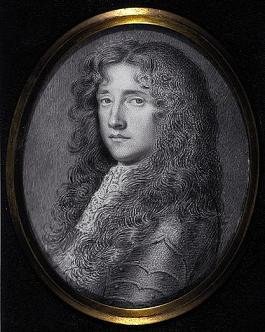

The Bonnets of Bonnie Dundee
Claverhouse's Attempt to Sway the Edinburgh Parliament Convention - March 1689
Text by Walter Scott - Melody by Charlotte Sainton Dolby
Tune - Mélodie
Sequenced by Christian Souchon|
"Adieu Dundee"
,
"Bonie Dundee"
and
"Bonny Dundee"
are 3 songs inspired by the tune
"Adew Dundee"
from the Skene MS (c. 1620) and the relating ballad
"Jockey's Escape from Dundee"
(c. 1710).
A variant to the same tune is the vehicle for other Jacobite songs: "There was a Cooper" , "Plain Truth" , "Fuigheall eile" , "Let Misers tremble" . Since c. 1840, Sir Walter Scott's composition "Bonny Dundie" is sung to another melody, that of a children's song "Queen Mary" , more attuned to it. |
|
To the Lyrics
On 22 December 1825 Scott wrote in his journal: “The air of ‘Bonnie Dundee’ running in my head today I [wrote] a few verses to it before dinner, taking the key-note from the story of Claverse leaving the Scottish Convention of Estates in 1688-9.” Scott sent a copy of the verses to his daughter-in-law Jane, mentioning that his great-grandfather had been among Claverhouse’s followers and describing himself as “a most incorrigible Jacobite”. This is a comic exaggeration, but Scott’s ballad is certainly written from the point of view of Claverhouse, whom he had already celebrated in his novel Old Mortality (1816). The song has a refrain copied from the traditional song “Jockey’s Escape from Dundee” . The poem was first published in a miscellany, The Christmas Box (1828-9), and then included as a song in Scott’s unperformed play The Doom of Devorgoil (1830). Later adaptations for singing include only stanzas 1, 2, 8 and 10, with the refrain. |
 Bonnie Dundee: Miniature by David Paton (betwwen 1690 and 1695) |
Le 22 décembre 1825 Scott écrivait dans son journal: "Ayant aujourd'hui dans la tête l'air de "Bonnie Dundee", j'ai [composé] quelques couplets sur cet air avant le dîner, en mettant l'accent sur le départ de Claverhouse de la Convention des Etats d'Ecosse en 1688-1689." Scott envoya une copie de ses vers à sa belle-fille Jane, lui rappelant que son arrière grand-père avait fait partie des compagnons de Claverhouse et se décrivant lui-même comme "un incorrigible Jacobite". Il plaisantait, bien sûr. Il n'en reste pas moins que la ballade se place du point de vue de Claverhouse, le héros de son roman "Le vieillard des tombeaux" (1816). Le chant a un refrain copié sur le chant traditionnel "Jockey s'échappe de Dundee" . Le poème fut d'abord publié dans des miscellanées, "La boîte de Noël" (1828-9), puis inséré en tant que chant dans une pièce de théâtre de Scott jamais donnée, La ruine de Devorgoil (1830). Les adaptations ultérieures pour le chant n'ont retenu que les couplets 1, 2, 8 et 10, ainsi que le refrain. |
|
To the tune
To help Jane identify the tune, Scott gave a few lines from each of three songs for which it had been used: - “Jockey’s Escape from Dundee” ; - “Scots Callan o’ Bonnie Dundee” - "The Charge is prepared" from John Gay's "Beggar’s Opera" . These tunes vary both in notes and in rhythmic phrasing and it is uncertain whether Scott had any particular variation in mind since he professed to have a good ear for time but little or none for tune. All are in a minor key, and have melancholy and subtle rhythms . The now best known setting , with its cheerful major key and cantering rhythm , suits both the spirit of Scott’s lines and their metre, and makes an excellent cavalry march. Scott might well have approved: he intended the verses “to be sung 'à la militaire' and not as the song is in the Beggars opera” . The origin of this immensely popular tune is uncertain. It makes use of the “Scotch snap” particular to Scottish folk-song. It seems to have been first used around the 1840's and was associated with the contralto and composer Charlotte Dolby , later Sainton-Dolby (1821-85). The sheet music of “Bonnie Dundee” was published by Boosey & Sons as “sung by Miss Dolby” and (after 1860) “sung by Madame Sainton-Dolby”, but Boosey credits her only with performing the song and arranging the accompaniment; no composer is named , and Boosey lists the piece as a “Scotch Air”. The melody could come from a piano piece called “The Band at a Distance” , played in decreasing volume to give the impression of a unit with a band marching away in the distance, and it was, very likely, Charlotte Dolby who first combined this tune with Scott’s words. The musicologist Anne Geddes Gilchrist (1863 - 1954), in “Notes on Children’s Game-Songs”, Journal of the Folk-Song Society, vol. 5, 1918, pp. 222-3, finds the origin of that melody in a children's song sung as "Sweet Mary" by girls from Loanhead and Lossiemouth at Lochans (Dumfries and Galloway), September, 1900, and Reginald Nettle in his book "Sing a Song of England" (1954), heard it as "Queen Mary" at Southport, Lancashire: My name is sweet Mary, my age is sixteen, My father’s a farmer on yonder green; He’s plenty of money to dress me in silks, For there’s nae bonny laddie to tak’ me awa... Queen Mary, Queen Mary, my age is sixteen, My father’s a farmer in yonder green; With plenty of money to dress me in silk, Come along, bonny lassie, and give me a waltz... Nettle notes that the tune then was used by a Newcastle organist, Henry Hemy for a hymn "Stella", from his hearing it sung by little girls at the village of that name, a reminiscence of both the preceding song and the ancient hymn to the Virgin Mary, "Ave, Maris Stella" . We are now far away from the licencious "Jockey's Escape". A score for piano or harp called “The Band at a Distance”, by Nicholas Charles Bochsa, was published by Walker & Son c. 1830, but is rather different from “Bonnie Dundee”. |
A propos de la mélodie
Pour aider Jane à identifier la mélodie, Scott citait quelques lignes de chacun des trois chants qui l'utilisaient: - “Jockey s'échappe de Dundee” ; - “Le galant Ecossais de la belle Dundee” - "L'accusation est prête" de l' "Opéra du Gueux" de John Gay. Toutes ces timbres divergent tant par les notes que par le rythme et il n'est pas sûr que Scott ait eu en tête une variante particulière, lui qui affirmait avoir de l'oreille pour le rythme, mais non pour les mélodies. Toutes sont sur le mode mineur et sur des rythmes subtils et mélancoliques. Le timbre le plus connu désormais est en mode majeur et a un rythme caracolant qui convient bien à l'esprit et à la métrique des vers de Scott. C'est une excellente marche de cavalerie dont Scott aurait approuvé le choix, lui qui voulait que "l'on chante ses vers 'à la militaire', et non comme sur le modèle des chants de l'Opéra du gueux" . L'origine de ce morceau immensément populaire est incertaine. Il utilise de façon systématique le "Scotch snap" particulier au chant traditionnel écossais. Il semble qu'il ait été utilisé à partir de 1840 environ et associé au nom de la contralto-compositrice Charlotte Dolby , qui deviendra Mme Sainton-Dolby (1821 - 1885). La partition de "Bonnie Dundee" publiée par Boosey & Fils portait la mention "interprété par Melle Dolby" puis (après 1860) "interprété par Mme Sainton - Dolby", mais Boosey ne la crédite que de l'interprétation et de l'arrangement de l'accompagnement du chant. Il ne désigne aucun compositeur et le fait figurer sur une liste comme "air écossais". On a suggéré que ce timbre proviendrait d'une pièce pour piano appelée "La fanfare lointaine" qu'on joue de moins en moins fort pour suggérer une fanfare qui s'éloigne, et que c'est Mlle Dolby qui l'aurait la première adaptée aux paroles de Scott. La musicologue Anne Geddes Gilchrist (1863 - 1954), indique dans ses "Notes sur certains chants de jeux enfantins", Journal de la Folk-Song Society, vol. 5, 1918, pp. 222-3, l'origine de cette mélodie: un chant d'enfants "Gentille Marie" qu'elle a entendu chanter à Loanhead et Lossiemouth en Lochans (Dumfries et Galloway), en 1900, tandis que Reginald Nettle, auteur de "Chante un chant d'Angleterre", l'a noté sous le titre de "Reine Marie" à Southport, Lancashire: Mon nom est Marie, je suis âgée de seize ans. Mon père de ces verts prés est le paysan. Comme il est cousu d'or, il m'habille de soie Sinon les beaux garçons ne voudraient pas de moi... Moi je suis Marie, la reine âgée de seize ans, Mon père de ces verts prés est le paysan. Comme il est cousu d'or, il m'habille de soie - Viens donc, gentille fille, valser avec moi... Nettle remarque que ce timbre fut utilisé par un organiste de Newcastle, Henry Hemy, pour un cantique appelé "Stella", d'après le nom du village où il l'entendit, et qui rappelle à la fois le chant précédent et l'antique cantique à la Vierge Marie, "Ave, Maris Stella" , ce qui nous éloigne fort du licencieux "Jockey's Escape". Un autre morceau pour le piano ou la harpe, appelé "La fanfare lointaine" et signé Nicholas Charles Bochsa a été publié par Walker & Fils vers 1830, mais il est assez différent de "Bonnie Dundee". |
|
Parodies
1° Lewis Carroll, Chapter IX of "Through the Looking-Glass": To the Looking-Glass world it was Alice that said "I've a sceptre in hand, I've a crown on my head. Let the Looking-Glass creatures, whatever they be Come dine with the Red Queen, the White Queen and Me!" Then fill up the glasses as quick as you can, And sprinkle the table with buttons and bran: Put cats in the coffee, and mice in the tea-- And welcome Queen Alice with thirty-times-three!... 2° Rudyard Kipling: "Song of the Camp Animals" in "The Jungle Book": By the brand on my shoulder, the finest of tunes Is played by the Lancers, Hussars, and Dragoons, And it's sweeter than "Stables" or "Water" to me-- The Cavalry Canter of "Bonnie Dundee"! Then feed us and break us and handle and groom, And give us good riders and plenty of room, And launch us in column of squadron and see The way of the war-horse to "Bonnie Dundee"!... 3° An American Civil War "Riding a Raid" (Traditional) : During the American Civil War traditional English, Irish, and Scottish songs were often sung or modified. The Confederates did this very often. The song "Riding a Raid" takes place during the 1862 Antietam Campaign. J.E.B. Stuart 's Confederate cavalry set off on a screening movement on the flank of Robert E. Lee's army in order to give Lee time to prepare his army to meet the Union army after Northern general George McClellan had gained information on Lee's location and plans. The Campaign would culminate in the battle of Antietam, or Sharpsburg as the Confederates called it. This would be the bloodiest day in American history and while the battle was indecisive, Lee was forced to abandon any hope of continuing the campaign. 'Tis old Stonewall the Rebel that leans on his sword, And while we are mounting prays low to the Lord: "Now each cavalier that loves honor and right, Let him follow the feather of Stuart tonight." Come tighten your girth and slacken your rein; Come buckle your blanket and holster again; Try the click of your trigger and balance your blade, For he must ride sure that goes riding a raid... Source: Wikipedia "Bonnie Dundee" & Andrew Kuntz's "Fiddler's Companion" (see Links) |
Pastiches
1° Lewis Carroll, Chapitre IX d' "A travers le miroir": Au monde du miroir Alice a déclaré "Vous les êtres du miroir, qui que vous soyez, "Je tiens le sceptre et la couronne orne mon front "Les Reines Rouge et Blanche et moi vous invitons. Viens remplir ma tasse et fais vite, allons, Couvre la table de boutons et de son. Pour la Reine Alice et ses quatre-vingt-dix Un chat dans le café, dans le thé des souris. 2° Rudyard Kippling: "Chant des Animaux du Camp" du "Livre de la Jungle": Par la marque à mon épaule, il n'est de chanson Plus belle que des lanciers, hussards et dragons, Que "Etables" ou "Des Eaux" encore plus joli Est le chant des cavaliers de "Bonnie Dundee". On peut nous dompter, panser, ou manier, Pourvu qu'on nous donne de bons cavaliers Qu'on nous lance en colonnes, en compagnies, Des chevaux guerriers, sur l'air de "Bonnie Dundee". 3° "La chevauchée" de la Guerre de Sécession" ('traditionnel). Pendant la Guerre de Sécession, des chants traditionnels anglais, irlandais et écossais furent souvent chantés et imités. Particulièrement chez les Sudistes. Le chant "La chevauchée" raconte un épisode de la campagne d'Antietam en 1862. La cavalerie Sudiste commandée par J.E.B. Stuart , partit opérer une manœuvre de couverture sue le flanc de l'armée de Lee pour lui laisser le temps de se préparer à un affrontement avec les Nordistes du Général McLellan, lequel était au courant de la position et des intentions de son adversaire. Le point culminant des opérations fut la bataille d'Antietam, ou de Sharpburg comme l'appelle les Sudistes. Ce fut une vraie boucherie, et bien que la bataille fût indécise, Lee dut abandonner tout espoir de continuer la lutte. Stonewall le rebelle, sur son sabre appuyé, Quand nous montions en selle, s'est mis à prier. "Tout cavalier épris d'honneur, de droit, ce soir Se laisse guider par le panache de Stuart. Sangles ajustées, rênes sur le dos, Bouclez vos tapis et fontes à nouveau, Assurez-vous des pistolets, des épées, De tout ce qu'on emporte pour la chevauchée. Sources: Wikipedia "Bonnie Dundee" et Andrew Kuntz's "Fiddler's Companion" (cf. Liens) |
Sheet music- Partition

|
THE BONNETS OF BONNIE DUNDEE
1. To the Lords of Convention [2] `twas Claver`se [1] who spoke. `Ere the King`s crown shall fall there are crowns to be broke; So let each Cavalier [3] who loves honour and me, Come follow the bonnet of Bonny Dundee.' CHORUS: Come fill up my cup, come fill up my can, Come saddle your horses, and call up your men; Come open the West Port and let me gang free, And it`s room for the bonnets of Bonny Dundee! 2. Dundee he is mounted, he rides up the street, The bells are rung backward, [4] the drums they are beat; But the Provost [5], douce man, said, `Just e`en let him be, The Gude Town is weel quit of that De'il of Dundee. ` Come fill up my cup, etc. 3. As he rode down the sanctified bends of the Bow, [6] Ilk carline [7] was flyting and shaking her pow; But the young plants of grace they looked couthie and slee, Thinking luck to thy bonnet, thou Bonny Dundee! Come fill up my cup, etc. 4. With sour-featured Whigs the Grass-market was crammed, As if half the West had set tryst to be hanged; There was spite in each look, there was fear in each e`e, As they watched for the bonnets of Bonny Dundee. Come fill up my cup, etc. 5. These cowls of Kilmarnock [8] had spits and had spears, And lang-hafted gullies to kill cavaliers; But they shrunk to close-heads and the causeway was free, At the toss of the bonnet of Bonny Dundee. Come fill up my cup, etc. 6. He spurred to the foot of the proud Castle rock [9], And with the gay Gordon [10] he gallantly spoke; `Let Mons Meg [11] and her marrows speak twa words or three, For the love of the bonnet of Bonny Dundee.' Come fill up my cup, etc. 7. The Gordon demands of him which way he goes - `Where`er shall direct me the shade of Montrose! [12] Your Grace in short space shall hear tidings of me, Or that low lies the bonnet of Bonny Dundee. Come fill up my cup, etc. 8. There are hills beyond Pentland and lands beyond Forth, [13] If there`s lords in the Lowlands, there`s chiefs in the North; There are wild Duniewassals [14] three thousand times three, Will cry hoigh! for the bonnet of Bonny Dundee. Come fill up my cup, etc. 9. There`s brass on the target of barkened bull-hide; There`s steel in the scabbard that dangles beside; The brass shall be burnished, the steel shall flash free, At the toss of the bonnet of Bonny Dundee. Come fill up my cup, etc. 10. Away to the hills, to the caves, to the rocks - Ere I own an usurper, I`ll couch with the fox; And tremble, false Whigs, in the midst of your glee, You have not seen the last of my bonnet and me! ` Come fill up my cup, etc. 11. He waved his proud hand, the trumpets were blown, The kettle-drums clashed and the horsemen rode on, Till on Ravelston`s cliffs and on Clermiston`s lee [15] Died away the wild war-notes of Bonny Dundee. Come fill up my cup, come fill up my can, Come saddle the horses, and call up the men, Come open your gates, and let me gae free, For it`s up with the bonnets [16] of Bonny Dundee! |
BOINEIDEAN CORRACH DHUINDIAIGH
1. Ri sàir Cuigse ,n Dunéidiunn Thuirt Cléibhers' mar so - Mu'n d' thig crùn an Rîgh 'nuas 'S îoma enuachd a bhios goirt; Gach lascaire treun Leis an êibhneas glonn-ghnîomh 'Nîs togadh aîr, 'a leannadh e Boineîd Dhuîndiaîgh! FONN: Lîonar mo chopan Dearr-lionar mo chuach 'Us diolaidear m' eachraidh, A mach bîodh mo shluagh; 'Ghrad fhosglar an t-Iar-phort, 'Us leigear dhomh triall,- Tha togaîl fo bhoineidîbh Corrach Dhùindiaigh. 2. Leum Cléibher s' air 'each Agus mharcaich tre 'n t-sråid Sheinn na cluîg air an ais, Bhuail guch druma la stàîrnn ; Ars' am Prolhaiste côir, “ Leîgear fôil leis a shrian, Oîr 's maîth as ar comunn An Rosad, Dundiagh." Lîonar mo chopan, &c. 3. Mar mharcaîch le sùrd Tre na Lùhaîth, 'n a still. Bha gach cailleach n' tathunn, 'S a' crathadh a cinn; 'S na h-ôgana gràsmhor, G amhare blath air an t-sonn, 'S a' guidhe 'buaidh-larach,' Do dh' Armunn nan glonn'. Lîonar mo chopan, &c. 4. Lion Cuigsiche searbh-ghnùiseach Margadh-an-fheôîr; Mar dhaoîne ri'n crochadh B`e coltas a phôir, 'N naîr' bha iad a' coimhead, Le goigh. 'us le ?amh, Am faiceadh iad seollhadh De bhoîneid Dhùîndiaigh Lionar mo chopan, &c. 5. B'aîrm sleagh, 'us bior-feôla Do na ceosaîch o`n Iar. Agus core air bharr bata, A chasgradh nan cliar; Ach theich as an rathad, Le h-athadh fo dhîon, Aig faotainn doîbh plathadh De mhaîthibh Dhùîndiaigh. Lîonar mo chopan, &c. 6. Spuir 'each gu cois craige sin, Caisteil nan stuadh, Thuirt grad ris u Chean - Coileach sar an Taoibh-tuadh- “ Canadh ' Meîg,'sa eo-bhrath'rean, Diog bhlath`-coig no sea- A labhras teas graídh Bhoîneid aird~ghuirm Dhuîndîaîgh." Lionar mo chopan, &c. 7. Diuc Gordon 'sin dh' îarr, “Cean is triall dhuit a Sheoîd ?' “An ceum sin a dh'fhoillsîcheas Taibhse Mhointrois! 'Us cluînnidh bhur Grasan, Gun daîl ormsa sgiul ; No 's iosal 'es un arfhaich Boîneîd ard-ghorm Dhuîndînîgh Lîonar mo chopan, &c. 8. “ Ma tha Moîrfhearan pailt. Ann am magh-thir man Gall, Gur lionmhor Cinn-chinnidh, 'N tir ghlînních nam beann, 'S naoi mile Duin'uasal, 'Dh' eîreas 'suas leam gun fhîamh 'Us îolach a thogas Air bhoineid Dhuindiaigh. Lionar mo chopan, &c. 9. “Air au sgeithidln tha pràis-- Seiche lan chairte 'n taîrbh- 'S an truaille 'tha lamh ri'Tha staillinn gun mherig; Agus dearsaidh a' phràis, Drîllîdh 'n staillinn mar 'ghrian 'N uair' thogar le h-ardan Boineid ard-ghorm Dhuîndîaigh. Lionar mo chopan, &c. 10. “Air falbh thun nan coilltibh, Nan creag, 'us nam beann; Ni mo leaha 's an t-Saobhaidh, Mu 'n taobh le rígh feall. Gabbaidh oíllt, a chealg-chuîgsich, 'S gearrmhairiann bhurrian, Dh' fheobh fathast garbh-sheolladh De bhoineid Dhuinlíaîgh." Lîonar mo chopan, &c. 11. Chrath e rithe nan euch, Agus sheid an stoc cruaidh, 'Choire-dhruma bhuail bras. Am marc-shluadh `ghrad ghluaîs ; Seach Stîuic Bhaîle-raohhaill, Agus Raon Bhaîle-cliar- Gu'n 'chailleadh, 'san astar, Ceol tartrach Dhuindîaigh. Lîonar mo chopan Dearr-lionar mo chuach 'Us diolaidear m' eachraidh, A mach bîodh mo shluagh; 'Ghrad fhosglar an t-Iar-phort, 'Us leigear dhomh triall,- Tha togaîl fo bhoineidîbh Corrach Dhùindiaigh. Ead. leis an Olla Urr. Iain Mac-an-t-saoir Gaelic translation by the Rev. Doc. John McIntyre, 1873 |
LES BONNETS DE BONNIE DUNDIE
1. Claverhouse [1] déclarait aux lairds en convention [2] "Avant celle du Roi, bien des têtes choiront; Que tous les Cavaliers [3] de leur honneur épris Se rallient au Bonnet du valeureux Dundee." Refrain Viens remplir mon verre! remplis le bien! Sellez les chevaux et rassemblez les miens! Dégagez le West Port, laissez-moi passer, Place au vaillant Dundee, place à tous ses Bonnets! 2. Dundee sur son cheval a traversé le bourg, Sonnez cloches à rebours [4], résonnez, tambours! Le Prévôt [5] prudemment n'intervient pas et dit: "C'est mieux pour la Ville, laissons partir Dundee!" Refrain 3. Quand il descend le Bow sinueux, peuplé de saints, [6] Les vieilles [7] l'injurient et lui montrent le poing, Quant aux jeunes plus affables elles sourient Et souhaitent bonne chance au bonnet de Dundee! Refrain 4. Le Marché au foin grouille de Whigs déconfits On pendrait la moitié du West End, eût-on dit. Des yeux pleins de rancune et pleins de haine aussi Qui regardaient passer les Bonnets de Dundee. Refrain 5. Capes de Kilmarnock [8] aux épieux acérés, Couteaux à long manche pour tuer les Cavaliers, N'osaient se concerter: le passage s'ouvrit Dès lors que s'agita le bonnet de Dundee. Refrain 6. Puis au pied du Château [9], piquant des éperons, Il adresse ces mots à son ami Gordon [10]: "Que la moelle de Meg Mons [11] s'épanche aujourd'hui Deux, trois fois pour saluer les Bonnets de Dundee!" Refrain 7. Gordon lui demande par quel chemin aller; "Où l'ombre de Montrose voudra me guider! [12] Votre Grâce entendra parler de moi, pardi Sous peu. Honte, sinon, au bonnet de Dundee! Refrain 8. Par-delà le Pentland et par-delà le Forth, [13] Les lairds, maîtres du Sud, les Chefs des Clans du Nord Et les "duine uasal" [14], au nombre de neuf mille Crieront "vivent les Bonnets du vaillant Dundee!" Refrain 9. Tant le cuivre des targes en cuir de taureaux Que l'acier qui se cache au cœur de nos fourreaux Pour mieux étinceler, veulent être fourbis, Au signal donné par le bonnet de Dundee. Refrain 10. Regagnons donc les monts, les prés et les rochers, Car à l'usurpateur, je préfère un terrier. Si prompts à triompher, tremblez donc, Whigs maudits, Bientôt vous reverrez les Bonnets de Dundee! Refrain 11. Il fait signe de la main, les cors ont sonné La troupe s'éloigna, suivant les timbaliers. Mais passé Ravelston Cliffs et Clermiston Lea [15] S'estompa la musique du Vaillant Dundee. Viens remplir mon verre! remplis le bien! Sellez les chevaux et rassemblez les miens! Ouvrez-moi les portes: je vais sortir d'ici. Place à la lutte, Bonnets [16] du Vaillant Dundee! (Trad. Ch. Souchon (c) 2010) |
|
[1]
John Graham of Claverhouse
.
John Graham of Claverhouse, 1st Viscount Dundee (c. 21 July 1648 - 27 July 1689) began his military career as a soldier of fortune in France and the Netherlands. He returned to Scotland by 1678 and was made captain of the dragoons sent to the southwest to suppress Presbyterian insurgents who opposed the Anglican regime of King Charles II. Although beaten by the rebels at Drumclog Moss, Lanark, on June 1, 1679, Graham helped defeat them at Bothwell Bridge on June 22. This first part of his career earned him his first nickname, "Bluidy Clavers" . He spent most of the next two years in England, where he won the favour of Charles’s brother James, Duke of York. After the Duke of York assumed the throne as James II in 1685, Graham at first took little part in military or governmental affairs. But when the Dutch Protestant stadtholder William of Orange invaded England in November 1688, Graham became second-in-command of the Scottish army sent to aid the king. He was created Viscount Dundee by James on November 12. James fled from England in December, and Dundee then returned to Scotland to champion the cause of the exiled monarch. Rallying forces in the central Highlands, he ambushed General Hugh McKay at the Pass of Killiecrankie on July 17, 1689. Dundee’s forces were completely victorious, but he was shot and fell from his horse, mortally wounded. In August the Scottish resistance was crushed at the Battle of Dunkeld. Dundee became a Jacobite hero known as " Bonnie Dundee . [2] The Lords of Convention : This song refers to an unavailing attempt by Viscount Dundee, to sway the Convention called by William III in march 1689 in Edinburgh to ratify his succession to the throne of Scotland (as William II). Despairing of carrying the vote and afraid of an attempt on his person, he rode off at the head of his 50 mounted followers, causing consternation among the faint-hearted citizens. His departure had the effect of causing many who favoured his views to withdraw also and those who favoured William were left without opposition. Meanwhile, Dundee withdrew to the Highlands, raised King James' banner on Dundee Law and set about gathering an army in the Highlands. [3] Cavaliers : supporters of King Charles I during the Revolution and his successors, (opposed to the "Roundheads", Cromwell's short-haired soldiers). [4] To ring bells backward : i.e. from lowest to highest, was a signal of alarm for fire or invasion, or to express dismay. [5] Provost : the Mayor of Edinburgh; ("douce"means here "cautious"). [6] The Bow, Grass-Market, West Port: Edinburgh thoroughfares(Dundee is moving westwards). [7] "Carline" , "flyting", "couthie", "slee", etc. Later variants of the song add still more scoticisms "Tae the Laird o' Convention...". [8] Kilmarnock : William Boyd, 3rd Earl of Kilmarnock (d.1717) was a partisan of the Hanoverian King. He fought for George I in 1715. His son William fought for Charles Edward. He professed repentance on the scaffold.. [9] Castle Rock : Edinburgh Castle is a fortress atop the volcanic Castle Rock. The last military action the castle saw was during the 1745 Jacobite Rising. The Jacobite army had captured Edinburgh without a fight in September 1745, but the castle remained in the hands of General George Preston, who refused to surrender. The Jacobites attempted in vain to blockade the castle. Preston's response was to bombard Jacobite positions within the town. Prince Charles called off the blockade and by November marched on to England, leaving Edinburgh to the castle garrison. (Source: Wikipedia) [10] The Duke of Gordon : Governor of Edinburgh Castle, was required by the Parliament to surrender the fortress. Gordon, who had been appointed by James VII, refused. In March 1689, the castle was blockaded by 7,000 troops, against a garrison of 160 men. On 18 March, Viscount Dundee climbed up the Castle Rock, and attempted to persuade Gordon to ride out with him in rebellion against the new King. Gordon chose to stay. During the ensuing siege, he refused to fire upon the town, while the besiegers inflicted little damage on the castle. He eventually surrendered on 14 June, due to dwindling supplies, and having lost 70 men during the three-month siege. [11] Mons Meg is a medieval large bore gun located in Edinburgh Castle, made to Philipp the Good, Duke of Burgundy's order around 1449 and sent as a gift eight years later to King James II of Scotland. From the 1540s it was fired only on ceremonial occasions from Edinburgh Castle from where shot could be heard up to 2 miles distant. It was taken to the Tower of London in 1754, but was returned to the Castle in 1829, after the intervention of Walter Scott. "Meg" may be a reference to Margaret of Denmark, Queen of James III of Scotland, while "Mons" in Belgium was one the locations where the cannon were originally tested. [12] James Graham, Marquis of Montrose : (1612 - 1650) was a Scottish nobleman and soldier, who initially joined the Covenanters in the Wars of the Three Kingdoms, but subsequently supported King Charles I as the English Civil War developed. From 1644 to 1646, and again in 1650 he fought a civil war in Scotland on behalf of the King and is generally referred to in Scotland as simply the "Great Montrose". [13] Pentland, Firth of Forth : The Pentland Firth (Gaelic: An Caol Arcach, meaning the Orcadian Strait), which is actually more of a strait than a firth, separates the Orkney Islands from Caithness in the north of Scotland. The Firth of Forth is the large estuary north of Edinburgh.. [14] Duniewassal : (gaelic: duine uasal; duine=man, uasal= high, dignified). A "gentleman", especially a cadet of a ranking family, among the Highlanders. [15] Ravelston, Clermiston : Western Edinburgh suburbs. [16] These "Bonnets" might be a homophone of the (havermeal) "bannock" in the original "Jockey's Escape from Dundee (see note 2 to Bonie Dundee ). |
[1]
John Graham de Claverhouse
.
John Graham de Claverhouse, 1er vicomte Dundee (vers 21 juillet 1648 - 27 juillet 1689) commença sa carrière militaire comme mercenaire en France et aux Pays Bas. Il revint en Ecosse vers 1678 où il devint capitaine de Dragons et chargé de mâter le soulèvement des Presbytériens du sud-ouest hostiles à l'organisation Episcopalienne voulue par le roi Charles II. Bien que battu par les rebelles à Drumclog Moss en Lanark, le 1er juin 1679, il contribua à leur défaite à Bothwell Bridge , le 22 juin suivant. Cette première partie de sa carrière lui valut son premier surnom, "Clavers le Sanguinaire" . Il passa le plus clair des deux années suivantes en Angleterre où il sut se faire apprécier du frère de Charles II, Jacques, Duc d'York. Lorsque celui-ci monta sur le trône sous le nom de Jacques II en 1685, Graham n'intervint au début qu'assez peu dans les affaires militaires et politiques. Mais lorsque le protestant hollandais, le stathouder Guillaume d'Orange envahit l'Angleterre en novembre 1688, Graham devint commandant en second de l'armée écossaise envoyée pour défendre le roi. Celui-ci le créa Vicomte Dundee le 12 novembre 1688. Jacques quitta l'Angleterre en décembre et Dundee rejoignit l'Ecosse pour défendre la cause du monarque en exil. Il réunit des troupes dans le centre des Highlands avec lesquelles il tendit une embuscade au général Hugh McKay au défilé de Killiecrankie le 17 juillet 1689. Ce fut une éclatante victoire, mais il fut atteint par une balle et tomba de son cheval, blessé mortellement. En août, la résistance écossaise fut écrasée à Dunkeld. Les Jacobites firent de Dundee un héro et ne le désignèrent plus que par le sobriquet "Bonnie Dundee" . [2] La Convention des Lords : Ce chant parle de la tentative avortée de Dundee, de pousser la Convention réunie par Guillaume III en mars 1689 à Edimbourg à ne pas entériner son accession au trône d'Ecosse (en tant que Guillaume II). N'espérant plus influencer le vote et craignant qu'on attente à sa personne, il quitta la ville suivi de 50 autres Jacobites, tous à cheval, semant la consternation parmi les citadins. Son départ soudain eut pour effet de décourager nombre de ceux qui étaient favorables à Jacques, tandis que les partisans de Guillaume se retrouvaient sans adversaires. Dundee se retira dans les Highlands, leva l'étendard de Jacques II à Dundee Law et entreprit de réunir une armée dans les Highlands. [3] Cavaliers : partisans de Charles I pendant la révolution d'Angleterre et de ses successeurs (tandis que les Têtes Rondes, soldats de Cromwell avaient les cheveux courts). [4] On faisait sonner les cloches à rebours : graves d'abord, aigües ensuite (dong, ding), pour donner l'alarme en cas d'incendie, d'invasion ou de catastrophe. [5] Prévôt : c'était ainsi qu'on appelait le maire d'Edimbourg. [6] Le "Bow" (le Coude), le Marché-au-Foin, La Porte de l'Ouest : sont des artères d'Edimbourg. Dundee se dirige vers l'ouest. [7] "Carline" , "flyting", "couthie", "slee", etc. sont des tournures écossaises qu'on se plaira à multiplier encore dans des versions ultérieures du chant. [8] Kilmarnock : William Boyd, 3ème comte de Kilmarnock (mort en 1717) soutenait le roi hanovrien. Il combattit pour Georges I en 1715. Son fils William combattit pour Charles Edouard. Il exprima ses regrets sur l'échafaud. [9] Le Château d'Edimbourg : occupe le sommet d'un piton volcanique, le Castle Rock. La dernière action militaire à laquelle elle dut faire face eut lieu en 1745 lors du soulèvement Jacobite. L'Armée du Prince s'était emparée d'Edimbourg sans coup férir en septembre, mais le château était resté aux mains du commandant de la place, le général Preston, qui refusa de se rendre. Les Jacobites tentèrent en vain d'en faire le siège. En réponse Preston bombarda leurs positions à l'intérieur de la ville. Charles leva le siège et dès novembre continua sa marche vers l'Angleterre, abandonnant Edimbourg à la garnison du château. [10] le Duc de Gordon : gouverneur du Château d'Edimbourg le Parlement lui demanda de livrer la forteresse. Gordon qui avait été choisi par Jacques VII refusa. En mars 1689, 7000 fantassins firent le siège du château dont la garnison se comptait 160 hommes. Le 18 mars, Dundee grimpa en haut du rocher et s'efforça de convaincre Gordon de sortir pour le suivre dans la rébellion contre le nouveau roi. Gordon préféra rester. Pendant le siège il refusa de tirer sur la ville, tant que les assiégeants épargnaient le château. Il finit par se rendre le 14 juin, n'ayant plus de provisions et après avoir perdu 70 hommes en trois mois de siège. [11] Mons Meg est un canon à longue portée médiéval installé au Château d'Edimbourg, construit sur l'ordre de Philippe le Bon, Duc de Bourgogne vers 1449 et envoyé en cadeau huit ans plus tard au roi d'Ecosse Jacques II. A partir des années 1540 on ne s'en servi qu'à l'occasion de cérémonies: les coups tirés depuis le Château d'Edimbourg s'entendaient jusqu'à 3 km de distance. Il fut emporté à la Tour de Londres en 1754, mais restitué au Château en 1829, sur l'intervention de Walter Scott. "Meg" (Margot) pourrait désigner Marguerite de Danemark, épouse du roi Jacques III d'Ecosse, tandis que "Mons" (en Belgique) est l'un des endroit où l'on essayait les canons à l'origine. [12] James Graham, Marquis de Montrose (1612 - 1650) était un noble écossais, qui fut à l'origine du côté des Covenantaires dans les Guerres des Trois Royaumes, mais qui prit parti pour le roi Charles Ier quand elles débouchèrent sur une guerre civile. De 1644 à 1646, puis en 1650 il participa à cette guerre en Ecosse à la tête des Loyalistes. Il est resté dans la mémoire des Ecossais, comme le "Grand Montrose".. [13] Pentland, Forth : Le Pentland Firth (gaélique: An Caol Arcach, la "Passe des Orcades"), qui est effectivement un détroit plus qu'un fjord (firth), sépare les Îles Orcades de Caithness au nord de l'Ecosse. Le Firth of Forth est le grand estuaire au nord d'Edimbourg. [14] Duine uasal : (breton "den uhel"?) mot gaélique signifiant "gentilhomme", et, plus particulièrement, cadet d'une famille aristocratique, chez les Highlanders. [15] Ravelston, Clermiston : faubourgs a l'ouest d'Edimbourg. [16] Ces bonnets sont peut-être les homophones du (havermeal) "bannock" de la chanson d'origine (cf. Bonie Dundee , note 2). |
The "Corries" sing "Bonny Dundee"